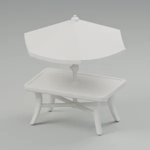
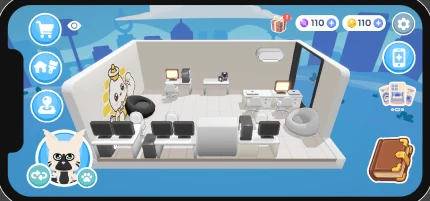

Octubre · 2026
Un mismo mueble con seis acabados
En octubre, la mayoría de los muebles básicos ya tenía seis estilos. El equipo reunió dos versiones del mismo cuarto para ver qué cambiaba al sustituir colores, texturas y materiales.
Explorar las piezas ↓ Comparar los cuartos ↓Colección de octubre
Materiales, pelajes y hocicos
El mismo cuarto cambia de aspecto
Las capturas de octubre enseñan cómo el material maestro cambia el ambiente y cómo se organizan sus controles.

Catálogo de mobiliarioEl nuevo lote de mobiliarioRecorre 29 modelos del archivo de arte, desde el caballete hasta la mesa con sombrilla.↗Prueba interactiva
Dos acabados del mismo cuarto
Desliza la división sobre las dos capturas de octubre. Fíjate en los gabinetes, el suelo y la pared del fondo.


↔Los cambios en el cuarto
Un material para varios acabados
Los grupos de vértices distinguen material, sombras y bordes. Un material maestro usa esas regiones para variar color y textura. La mayoría de las piezas básicas recibió seis estilos.
Probar la colección en una habitación
El equipo combinó muebles y texturas de pisos y paredes para probar espacios completos. El nuevo lote de muebles básicos estaba en geometría y pendiente de ajustar tamaños.
La toalla y el baño en PetCare
Las nuevas texturas y pruebas de hocicos de gato conviven en el recap con la interfaz PetCare. El diseño reúne comida, baño y juego alrededor del personaje.
Corte de producción · octubre de 2026
Qué quedaba por cerrar
- 32 muebles nuevos en geometría base
- El inventario de arte ya recogía sus formas. Quedaba ajustar tamaños, asignar nombres y distribuir las piezas en colecciones.
- 8 lotes en el sistema de zonas
- Las zonas permiten cambiar materiales por partes. El lote 006 figuraba en pausa y seguía pendiente completar estilos en Unity.
- 3 tamaños en el kit de habitaciones
- El kit contemplaba cuadrículas de 10 × 8, 12 × 8 y 14 × 8 casillas. Faltaba confirmar cuáles podría elegir el jugador.